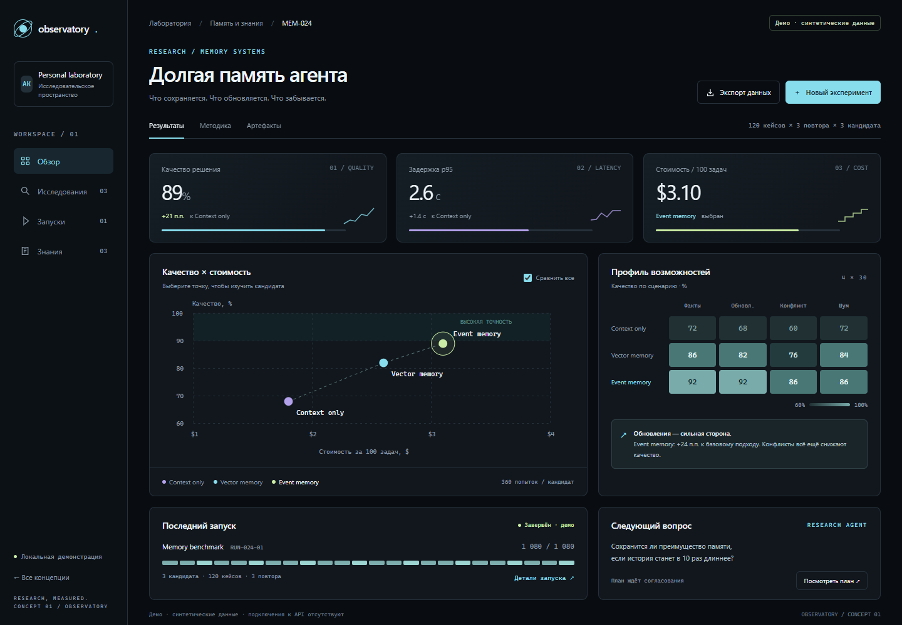
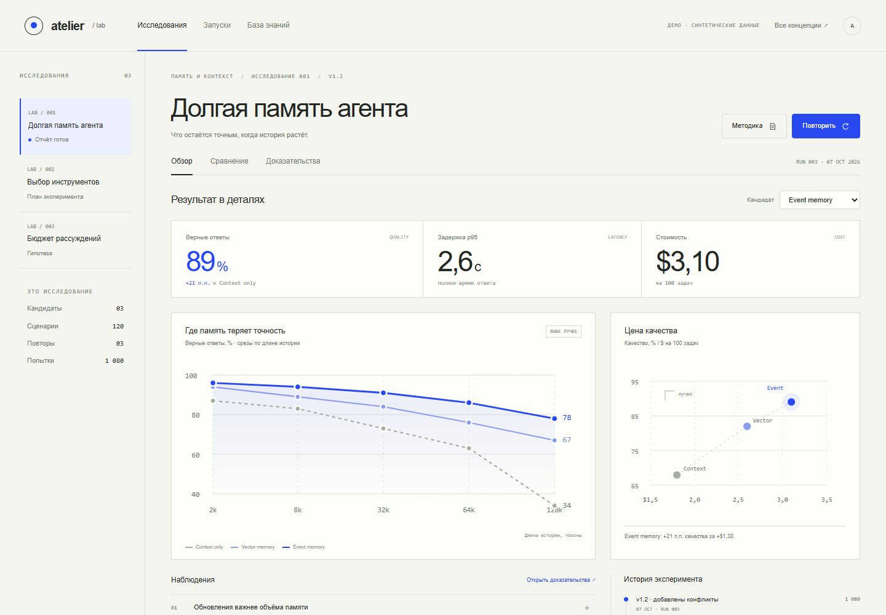

Лаборатория, которая
превращает новое в проверенное.
Архитектура C4, план реализации и три работающих UI-прототипа. Подключаемые ИИ-исследователи, воспроизводимые эксперименты и ясные визуальные выводы.
Три способа исследовать
Самостоятельные HTML · работают без сети
Управлять экспериментами
Графит, холодный свет и точные акценты. Сравнение качества, стоимости и хода исследований на одном экране.

Понимать результаты
Жемчужный фон, кобальт и просторная композиция. Главное внимание — выводам, доказательствам и сравнению.

Вести исследование целиком
Карта связей и путь от материала до решения: план, согласование, запуск, доказательства и сравнение.
Во всех концепциях одинаковые синтетические показатели. Кнопки запуска выполняют только локальную демонстрацию; API не подключены и расходы не возникают.
Карта остаётся главным способом исследовать связи. Рабочие экраны раскрывают полный цикл лаборатории; версии, расходы и доказательства доступны рядом с действием. Что изменилось и что покрывает прототип ↗
Основа реализации
C4 и системные контракты
Четыре уровня, 8 диаграмм, интеграции, исполнение, измерения, бюджеты, воспроизводимость и развёртывание. Редактируемые SVG и DOT, JSON Schema плана.
Альфа за 4–5 недель
Claude Code — разработчик, Codex — техлид. Пять недельных этапов, критерии G0–G7, матрица приёмки и первое задание.
Первое задание Claude Code
Контракты и проверка отказных сценариев. Готовая формулировка для передачи разработчику и последующего ревью.
Покрытие требований альфы
Конкретные сценарии, зависимости и доказательства приёмки. Статусы реализации ведутся отдельно от готовности макета.
Что исследуем и как измеряем
15 семейств технологий, 14 типов задач, 9 семейств метрик. Расширяемая таксономия, режимы исследований и выбор понятных графиков.